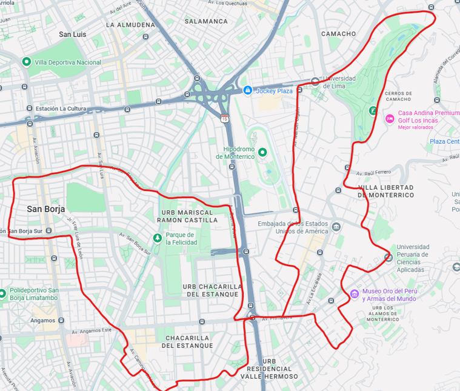

“Cuida tu cuerpo. Es el único lugar que tienes para vivir.”
Experiencia CAS · Abril · Actividad
Cuestión global y problema local
La cuestión global es el sedentarismo y la promoción de estilos de vida activos. La falta de actividad física es un problema de salud pública asociado a enfermedades y bienestar emocional. A nivel personal, el ritmo escolar y el tiempo frente a pantallas pueden desplazar fácilmente el ejercicio, por lo que crear una rutina sostenible se vuelve un desafío concreto.
Descripción de la experiencia
Inicié una rutina de montar bicicleta los domingos durante al menos una hora y media por sesión. La actividad surgió como acompañamiento a la nueva rutina de ejercicio de mi mamá y se convirtió en un reto personal para mejorar resistencia, constancia y manejo del tiempo.
Evidencias

Reflexión personal (Etapas CAS)
Investigación
Reconocí que necesitaba dedicar tiempo regular a una actividad aeróbica y que hacerlo acompañado podía facilitar el inicio de la rutina.
Preparación
Reservé los domingos y planifiqué un tiempo mínimo para evitar que la actividad dependiera únicamente de tener ganas ese día.
Acción
En las primeras sesiones sentí más fatiga; con la repetición fui percibiendo que podía completar recorridos similares con menos cansancio.
Demostración
El aprendizaje principal fue que la mejora física no apareció por una sesión intensa, sino por repetir la actividad. Eso me hizo distinguir motivación de disciplina: la motivación ayuda a empezar, pero el progreso depende de mantener el hábito incluso cuando no resulta especialmente emocionante.
También quiero evitar afirmar progreso solo por una sensación subjetiva. Si continúo con la experiencia, registraría distancia, tiempo y percepción de esfuerzo para comprobar si realmente mejora mi resistencia. Además, prestaría más atención a seguridad vial y planificación de rutas, porque una actividad saludable también debe realizarse de manera responsable.
Resultados de aprendizaje logrados
- RA 1: Identificar en uno mismo puntos fuertes y áreas en las que se necesita mejorar.
- RA 2: Afrontar desafíos y desarrollar nuevas habilidades.
- RA 4: Mostrar compromiso y perseverancia en una experiencia CAS.